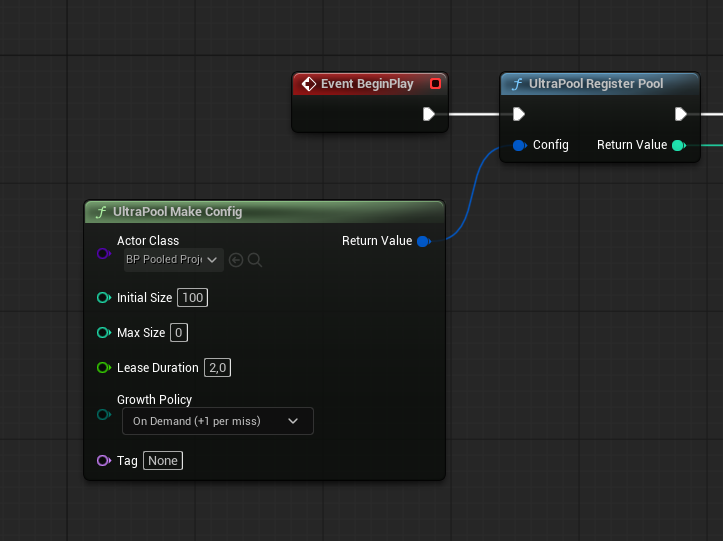
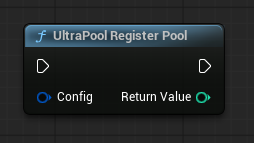
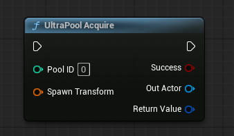
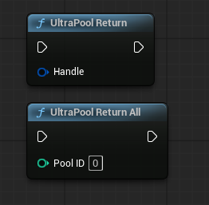

High-Performance Actor Pooling System for Unreal Engine 5
Three steps to go from zero to pooling — works identically in Blueprint and C++.
Call this once — at level start, in a Game Mode, or a Begin Play event. Subsequent calls with the same class/tag are safe no-ops.
Blueprint node: UltraPool Register Pool
// C++ — call from BeginPlay or Initialize
UUltraPoolSubsystem* Pool = UUltraPoolSubsystem::Get(this);
FPoolConfig Config;
Config.ActorClass = ABullet::StaticClass();
Config.InitialSize = 50;
Config.MaxSize = 200;
Config.GrowthPolicy = EPoolGrowthPolicy::OnDemand;
Config.DefaultLeaseDuration = 5.0f; // auto-return after 5 s
Config.PoolTag = FName("Bullet");
int32 PoolID = Pool->RegisterPool(Config);The actor is unhidden, teleported to your transform, and ready to use. Always check bSuccess — Fixed-policy pools can be exhausted.
Blueprint node: UltraPool Acquire / UltraPool Acquire By Tag
bool bSuccess;
AActor* BulletActor;
FPooledActorHandle Handle = Pool->AcquireActor(PoolID, MuzzleTransform);
// Or by tag — no PoolID needed
Handle = Pool->AcquireActorByTag(FName("Bullet"), MuzzleTransform);
if (Handle.IsValidHandle())
{
BulletActor = Pool->GetActorFromHandle(Handle);
// BulletActor is live and visible — treat it like a freshly spawned actor
}The actor is hidden, collision disabled, and moved below the world — ready for the next caller.
Blueprint node: UltraPool Return
// Always return via handle — O(1) and stale-safe
Pool->ReturnActor(Handle);
// Handle is now stale — any further calls using it are safe no-opsDestroy() on pooled actorsCalling Destroy() removes the actor from the pool permanently. Always call UltraPool Return / ReturnActor instead. If the actor has a UUltraPoolComponent, use ForceReturn().
UltraPool is a UTickableWorldSubsystem — one instance per UWorld, created automatically, no manual lifecycle management needed.
Lightweight value type (safe to store in Blueprint). Embeds PoolID, ActorIndex, and Generation. Stale handles (from returned actors) are automatically detected via the generation counter — all API calls with stale handles are silent no-ops.
Every time a slot is returned, its Generation increments. Any outstanding handle for that slot carries the old generation number and is immediately invalid. This prevents double-return bugs and use-after-return access without any runtime overhead beyond an integer compare.
All functions are available in Blueprint via UUltraPoolBlueprintLibrary (node prefix: UltraPool …) and in C++ via UUltraPoolSubsystem::Get(this).
InitialSize > 0.bDestroyActors = true to immediately destroy all managed actors.InitialSize actors immediately. No-op if already warmed up. Call before gameplay to avoid hitches.FPoolConfig.PoolTag string. Useful when multiple pools share the same actor class but serve different purposes.OnReturnedToPool, hides actor, increments generation.DefaultLeaseDuration == 0).All fields are exposed to Blueprint via the UltraPool Make Config node or the Project Settings panel.
| Field | Type | Default | Description |
|---|---|---|---|
ActorClass |
TSubclassOf<AActor> |
— | The actor class this pool manages. Required. |
InitialSize |
int32 |
10 |
Actors pre-spawned during WarmUp. Set to 0 to skip warmup and grow lazily. |
MaxSize |
int32 |
0 |
Hard ceiling on total actors. 0 = unlimited. Use with caution on the Doubling policy. |
DefaultLeaseDuration |
float |
0.0 |
Seconds before auto-return. 0 = no expiry. Requires bAutoReturnOnLeaseExpiry = true. |
GrowthPolicy |
EPoolGrowthPolicy |
OnDemand |
How the pool grows when all slots are leased. See Growth Policies section. |
GrowthIncrement |
int32 |
5 |
Actors added per miss when using the Elastic policy. Ignored by other policies. |
Priority |
EPoolPriority |
Normal |
Trim priority. Critical pools are never auto-trimmed; Background pools are trimmed first under memory pressure. |
PoolTag |
FName |
None |
Logical name for AcquireByTag lookups. Leave None for class-only lookup. |
bAutoReturnOnLeaseExpiry |
bool |
true | Subsystem auto-returns actors when DefaultLeaseDuration elapses. Disable only for manual lease management. |
bResetTransformOnReturn |
bool |
true | Teleport the actor 100,000 units below the world on return, preventing visual pop-in if briefly visible. |
bDisableCollisionOnReturn |
bool |
true | Disable all collision on return. Re-enabled automatically on acquire. |
bDisableTickOnReturn |
bool |
true | Disable actor Tick on return to avoid wasted CPU on dormant actors. |
TrimIdleAfterSeconds |
float |
0.0 |
Auto-shrink the pool when all actors have been idle for this many seconds. 0 = never trim automatically. |
TrimTargetCount |
int32 |
0 |
Target slot count after auto-trim. 0 = trim to the current number of active leases. |
An optional Blueprint/C++ interface your actor can implement to hook into pool lifecycle events.
It is never required — any AActor subclass can be pooled without modification.
| Event | Equivalent to | When to use |
|---|---|---|
OnPoolWarmup |
Constructor / CDO init | Called once at initial spawn, before any lease. Pre-load heavy assets, initialize meshes, cache component references here. |
OnAcquiredFromPool |
BeginPlay (per use) | Called every time the actor leaves the pool. Reset state, restart Niagara systems, re-apply materials, reset AI controller here. |
OnReturnedToPool |
EndPlay (per use) | Called every time the actor is returned. Stop sounds, deactivate particles, cancel timers, unbind delegates here. |
CanBeReclaimed |
— | Return false to prevent forced reclaim (e.g. actor is mid-cutscene or in a critical gameplay moment). Default: true. |
// Minimal C++ implementation
class ABulletActor : public AActor, public IPoolableInterface
{
GENERATED_BODY()
public:
virtual void OnAcquiredFromPool_Implementation(FPooledActorHandle Handle) override
{
// Reset velocity, restart trail, etc.
ProjectileMovement->Velocity = FVector::ZeroVector;
TrailSystem->Activate(true);
}
virtual void OnReturnedToPool_Implementation(EPoolReturnReason Reason) override
{
TrailSystem->Deactivate();
GetWorldTimerManager().ClearAllTimersForObject(this);
}
};Applied when all slots are leased and a new Acquire call arrives.
Never grows. Returns an invalid handle on miss. Best for tightly budgeted pools (e.g. limited power-ups). Forces you to handle misses explicitly.
Spawn cost: Zero at runtime
Spawns exactly +1 actor per miss. Predictable growth. Best general-purpose policy for most pools. Small per-miss hitch — acceptable in most scenarios.
Spawn cost: 1× on miss
Spawns +N actors per miss (configurable via GrowthIncrement). Amortizes spawn cost when you expect burst demand. Good for wave-based combat.
Spawn cost: N× on miss
Doubles the pool size on each miss (currentSize × 2). Maximum throughput growth. Capped at 10,000 actors. Use carefully — can cause large memory spikes.
Spawn cost: 2× current on miss
Controls which available slot is chosen on each Acquire. Set globally in Project Settings → Plugins → UltraPool.
| Policy | Strategy | Best for | Cost |
|---|---|---|---|
LIFO |
Last returned = first acquired | Best CPU cache locality. Most recently used actors are likely still warm in L1/L2. Default. | O(1) |
FIFO |
First returned = first acquired | Even distribution across all pool slots. Useful when actors have cool-down behavior that needs time to reset. | O(1) |
LeastUsed |
Lowest AcquireCount wins | Wear leveling — spreads usage evenly across all actors. Useful when per-actor state accumulates over time (e.g. mesh damage decals). | O(N free) |
MostUsed |
Highest AcquireCount wins | Hot-cache bias — keeps the same actors cycling through repeatedly. Best when initialization is expensive and you want a warm subset. | O(N free) |
Destroy() on a pooled actorCalling Destroy() permanently removes the actor from the pool, bloating memory over time. Always call UltraPool Return (Blueprint) or ReturnActor(Handle) (C++) instead. If the actor has a UUltraPoolComponent, call ForceReturn() from any Blueprint event.
OnAcquiredFromPoolNiagara and Cascade particle systems do not automatically restart when an actor is re-activated. Call Activate(true) (with bReset = true) on your particle components inside OnAcquiredFromPool. Forgetting this is the most common visual bug reported by UltraPool users.
Pooled actors are never removed from the World. They are hidden (bHidden = true), moved far below the level, and have their collision and tick disabled. They will appear in the Outliner with names like BP_Bullet_C_0. This is by design — the whole point of pooling is to avoid the cost of creation and destruction.
bAutoReturnOnLeaseExpiry is true by defaultIf you set a DefaultLeaseDuration, the subsystem will automatically call ReturnActor when the time expires — even if the actor is still visible. If your gameplay logic needs to extend the lease, call ExtendLease(Handle, ExtraSeconds) before expiry. To disable auto-return entirely, set bAutoReturnOnLeaseExpiry = false in the config.
AActor* pointers from a pooled actor across framesThe pool reuses actor pointers. If you cache MyBullet = AcquiredActor and the lease expires and the slot is given to another caller, your pointer still points to a valid actor — but a different one. Always validate via IsHandleValid(Handle) and resolve with GetActorFromHandle(Handle) when needed across frames.
bHiddenUltraPool calls SetActorHiddenInGame(true) after FinishSpawning for exactly this reason. If your Blueprint actor's Construction Script explicitly sets Hidden in Game = false, UltraPool's post-spawn call will correctly override it. Do not call SetActorHiddenInGame inside the Construction Script — use OnPoolWarmup instead.
Two full walkthroughs — same example in both: a gun that fires pooled projectiles. Pick your path.
Create a new Blueprint Actor — BP_PooledProjectile. Add a Static Mesh, a Sphere Collision, and optionally a Niagara component for a trail effect. No Projectile Movement Component required if you handle movement in Tick.
BeginPlay fires exactly once — at warmup, when the pool is created. Everything that needs to reset between uses (velocity, health, VFX…) goes in OnAcquiredFromPool, not BeginPlay.
Open BP_PooledProjectile → Class Settings → Interfaces → click Add → search for PoolableInterface. The two events appear under My Blueprint → Interfaces. To implement one, double-click its name — this opens a new event graph node you can wire up. Implement both:
Event OnAcquiredFromPool (Handle)
→ Activate(true) on your Niagara component ← bReset = true, or trail won't restart
→ Reset bIsAlive, damage counter, etc.
→ Launch: Set Velocity = Get Actor Forward Vector * Speed
↑ no cast needed — the gun already set the right rotation via SpawnTransform
→ Save Handle to a variable ← needed for Option B (manual return)
Event OnReturnedToPool (Reason)
→ Deactivate Niagara
→ Set Velocity = Zero
→ Clear and Invalidate Timer by Handle (if you use any)In BP_Gun → Event BeginPlay:
UltraPool Make Config
Actor Class → BP_PooledProjectile
Initial Size → 100 ← pre-spawns 100 actors at level start
Max Size → 0 ← 0 = unlimited, grows as needed
Default Lease Dur. → 2.0 ← auto-return after 2 s
Growth Policy → OnDemand (+ 1 per miss)
Pool Tag → None ← we'll acquire by PoolID directly
→ UltraPool Register Pool
→ Right-click the return value (PoolID) → Promote to variable → name it "BulletPoolID"

Calling Register Pool twice with the same config is harmless (returns the same PoolID), but there's no reason to. Do it once in BeginPlay and read BulletPoolID everywhere else.
In your Fire input event — use the PoolID stored in step 3:
UltraPool Acquire
Pool ID → BulletPoolID (the variable from step 3)
Spawn Transform → Get Socket Transform (Muzzle socket)
↑ rotation included — the projectile reads it in OnAcquiredFromPool
→ Branch on bSuccess
True → done. OnAcquiredFromPool fires automatically on the actor.
False → only happens with Fixed policy — safe to ignore here (OnDemand never misses)
Don't cast OutActor to BP_PooledProjectile to call a Launch function — that creates a hard reference and is unnecessary. Instead, pass the correct Spawn Transform (position + rotation toward the target) and let the projectile launch itself inside OnAcquiredFromPool using Get Actor Forward Vector. The gun says where and which direction — the actor does the rest.
Need to pass extra data (damage, speed)? Expose them as variables on the interface and set them before calling Acquire — still no cast required.
Two options — you can use both at the same time:
Option A — Automatic (set and forget)
DefaultLeaseDuration = 2.0 + bAutoReturnOnLeaseExpiry = true (default)
→ Nothing to wire. The subsystem returns the actor after 2 s automatically.
Option B — On hit (manual, for immediate return)
In BP_PooledProjectile → Event Hit (or On Component Hit):
UltraPool Return → plug in the Handle saved in step 2
The safest setup: return manually on hit (Option B) and keep DefaultLeaseDuration as a fallback for bullets that never hit anything. If the lease expires after a manual return already happened, the second return is silently ignored — no crash, no double-free.
In YourGame.Build.cs:
PublicDependencyModuleNames.AddRange(new string[]
{
"Core", "CoreUObject", "Engine",
"UltraPool" // ← add this
});// ABullet.h
#include "UltraPoolTypes.h"
#include "IPoolableInterface.h"
UCLASS()
class ABullet : public AActor, public IPoolableInterface
{
GENERATED_BODY()
public:
void Launch(FVector Direction);
virtual void OnAcquiredFromPool_Implementation(FPooledActorHandle Handle) override;
virtual void OnReturnedToPool_Implementation(EPoolReturnReason Reason) override;
private:
FPooledActorHandle MyHandle;
};// ABullet.cpp
void ABullet::OnAcquiredFromPool_Implementation(FPooledActorHandle Handle)
{
MyHandle = Handle; // cache for manual return
TrailFX->Activate(true); // restart VFX — bReset = true
ProjectileMovement->Velocity = FVector::ZeroVector;
}
void ABullet::OnReturnedToPool_Implementation(EPoolReturnReason Reason)
{
TrailFX->Deactivate();
GetWorldTimerManager().ClearAllTimersForObject(this);
}
void ABullet::NotifyHit(...) // or OnComponentHit
{
Super::NotifyHit(...);
UUltraPoolSubsystem::Get(this)->ReturnActor(MyHandle);
}// UShooterComponent.h
#include "UltraPoolSubsystem.h"
private:
int32 BulletPoolID = -1;// UShooterComponent.cpp — BeginPlay
void UShooterComponent::BeginPlay()
{
Super::BeginPlay();
FPoolConfig Cfg;
Cfg.ActorClass = ABullet::StaticClass();
Cfg.InitialSize = 50;
Cfg.MaxSize = 200;
Cfg.GrowthPolicy = EPoolGrowthPolicy::OnDemand;
Cfg.DefaultLeaseDuration = 3.0f;
Cfg.PoolTag = FName("Bullet");
BulletPoolID = UUltraPoolSubsystem::Get(this)->RegisterPool(Cfg);
}void UShooterComponent::Fire()
{
UUltraPoolSubsystem* Pool = UUltraPoolSubsystem::Get(this);
FTransform Muzzle = MuzzleComp->GetComponentTransform();
FPooledActorHandle Handle = Pool->AcquireActor(BulletPoolID, Muzzle);
if (!Handle.IsValidHandle()) return; // miss on Fixed policy
ABullet* Bullet = Cast<ABullet>(Pool->GetActorFromHandle(Handle));
if (Bullet)
{
Bullet->Launch(GetForwardVector() * BulletSpeed);
}
}Computing the PoolID from class + tag has a small lookup cost. Store it as a member variable and reuse it every shot — this is the fastest acquire path.